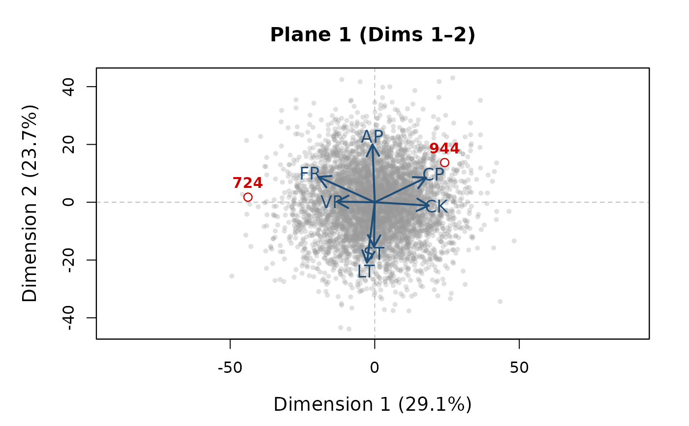

Produces a base-R row-isometric biplot for a specified pair of dimensions
(p1, p2). All persons are plotted as grey dots; a subset
specified by ids_highlight is overlaid in red and labelled. Domain
loading vectors are drawn as arrows. The plot is optionally saved to a PDF.
draw_sepa_biplot(
svd_fit,
id_vec,
domain_names,
p1 = 1L,
p2 = 2L,
ids_highlight = NULL,
out_file = NULL,
a_scale = 35,
t_scale = 40,
arrow_col = "#1F4E79",
hi_col = "red3",
others_alpha = 0.3
)List with components U (\(n \times K\)
left singular vectors), d (length-\(K\) singular values), and
V (\(p \times K\) right singular vectors), as returned by
svd or the format produced inside
run_sepa.
Vector of length \(n\). Person IDs (used to match
ids_highlight).
Character vector of length \(p\). Domain labels used for arrow annotations.
Integer. First dimension (x-axis). Default 1L.
Integer. Second dimension (y-axis). Default 2L.
Optional vector of IDs to emphasise. Matched against
id_vec. Default NULL (no highlighting).
Character or NULL. If a path is given the plot
is also written to that PDF file. Default NULL.
Numeric. Arrow scaling factor. Default 35.
Numeric. Label scaling factor. Default 40.
Colour string for domain arrows and labels.
Default "#1F4E79".
Colour string for highlighted persons.
Default "red3".
Alpha transparency for background persons.
Default 0.30.
Invisibly returns a list with the plotting coordinates:
Fx, Fy (person scores), end_x, end_y
(arrow tips), lab_x, lab_y (domain labels).
X <- as.matrix(fake_wj[, c("LT","ST","CP","AP","VP","CK","FR")])
Xs <- X - rowMeans(X)
sv <- svd(Xs)
draw_sepa_biplot(
svd_fit = list(U = sv$u, d = sv$d, V = sv$v),
id_vec = fake_wj$ID,
domain_names = c("LT","ST","CP","AP","VP","CK","FR"),
p1 = 1L, p2 = 2L,
ids_highlight = c(724, 944)
)
